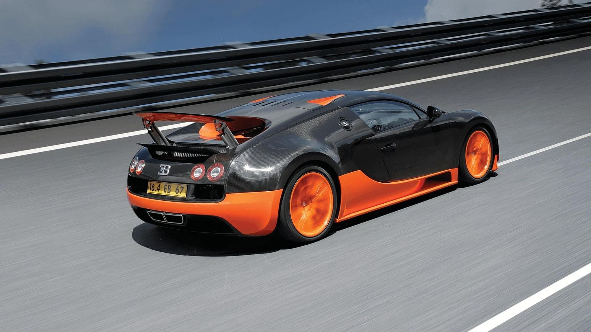
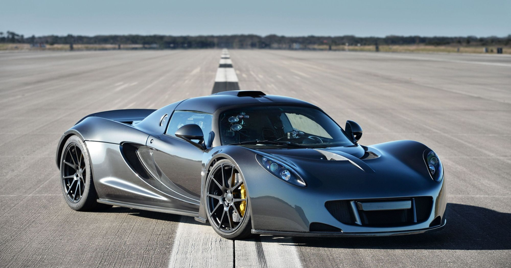
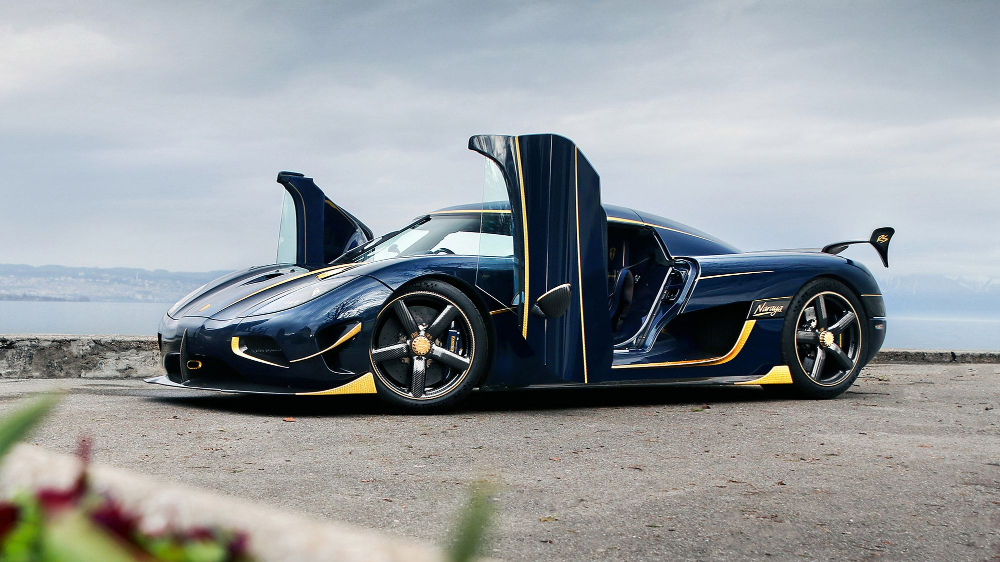

Top 3 najszybszych samochodów
3. Bugati Veyron Super Sport

Najszybszym Bugatti nie jest najnowszy model marki. Oficjalny i potwierdzony rekord prędkości należy do Veyrona Super Sport i wynosi 431 km/h. Model pojawił się na rynku w 2010 roku. Wyprodukowano tylko 30 egzemplarzy.
Silnik: W16, 8,0 l, 1200 KM
V-max: 431 km/h
2. Hennessey Venom GT

Wcześniej za najszybszy samochód uważany był Hennessey Venom GT. Osiągnął prędkość 435 km/h, jednak wynik nie został uwzględniony w Księdze Rekordów Guinnessa i tym samym nie jest oficjalny. Zasady księgi wymagają, aby samochód powstał w przynajmniej 30 egzemplarzach, a Venom GT zaplanowany jest na 29 sztuk (z czego sprzedano 11). Poza tym pas lotniska udostępniony był jedynie na czas pozwalający na jedną próbę, a rekordowy wynik uznawany jest na podstawie średniej z dwóch przejazdów w przeciwnych kierunkach.
Silnik: V8, 7,0 l, 1244 KM
V-max: 435 km/h
1. Koenigsegg Agera RS

4 listopada 2017 r. padł aktualny rekord świata prędkości: 457,2 km/h. Koenigsegg Agera RS to obecnie najszybszy samochód na świecie. Prędkość jest średnią z dwóch przejazdów na zamkniętej autostradzie w stanie Nevada. Podczas przejazdów osiągnięto maksymalnie 457,9 km/h.
Silnik: V8, 5,0 l, 1115 KM
V-max: 457,2 km/h